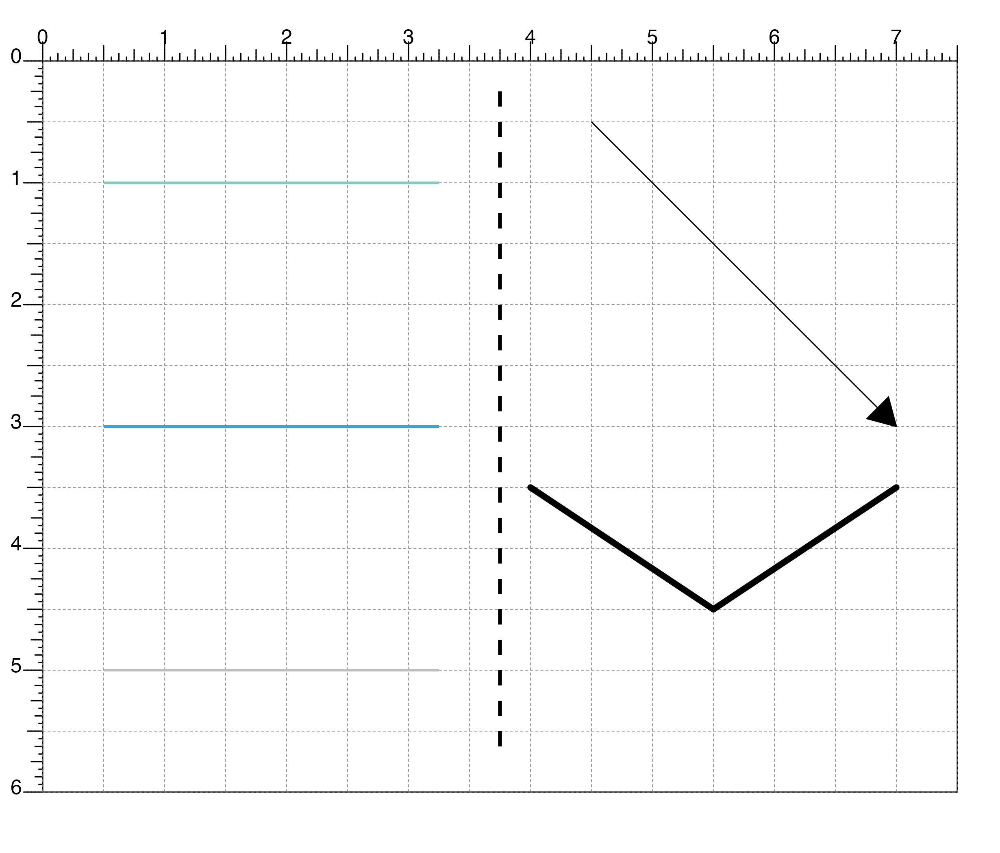

Draw a line segment within a plotgardener layout
plotSegments( x0, y0, x1, y1, default.units = "inches", linecolor = "black", lwd = 1, lty = 1, lineend = "butt", linejoin = "mitre", arrow = NULL, params = NULL, ... )
| x0 | A numeric vector or unit object indicating the starting x-values of the line segments. |
|---|---|
| y0 | A numeric vector, unit object, or a character vector of values containing a "b" combined with a numeric value specifying starting y-values of the line segments. The character vector will place starting y-values relative to the bottom of the most recently plotted plot according to the units of the plotgardener page. |
| x1 | A numeric vector or unit object indicating the stopping x-values of the line segments. |
| y1 | A numeric vector, unit object, or a character vector of v alues containing a "b" combined with a numeric value specifying stopping y-values of the line segments. The character vector will place stopping y-values relative to the bottom of the most recently plotted plot according to the units of the plotgardener page. |
| default.units | A string indicating the default units to use
if |
| linecolor | A character value specifying segment line color.
Default value is |
| lwd | A numeric specifying segment line width.
Default value is |
| lty | A numeric specifying segment line type.
Default value is |
| lineend | A character value specifying line end style.
Default value is
|
| linejoin | A character value specifying line join style.
Default value is
|
| arrow | A list describing arrow heads to place at either end of the line segments, as produced by the arrow function. |
| params | An optional pgParams object containing relevant function parameters. |
| ... | Additional grid graphical parameters. See gpar. |
Returns a segments object containing relevant
placement and grob information.
## Plot one line segment plotSegments( x0 = 3.75, y0 = 0.25, x1 = 3.75, y1 = 5.75, default.units = "inches", lwd = 3, lty = 2 )#>## Plot multiple line segments at different locations in different colors plotSegments( x0 = 0.5, y0 = c(1, 3, 5), x1 = 3.25, y1 = c(1, 3, 5), default.units = "inches", lwd = 2, linecolor = c("#7ecdbb", "#37a7db", "grey") )#>## Plot a line segment with an arrowhead plotSegments( x0 = 4.5, y0 = 0.5, x1 = 7, y1 = 3, default.units = "inches", arrow = arrow(type = "closed"), fill = "black" )#>## Plot lines with round lineends plotSegments( x0 = c(4, 7), y0 = 3.5, x1 = 5.5, y1 = 4.5, default.units = "inches", lwd = 5, lineend = "round" )#>